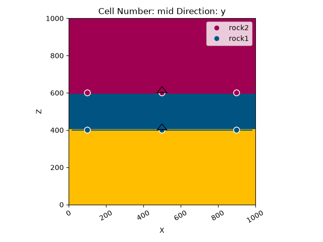
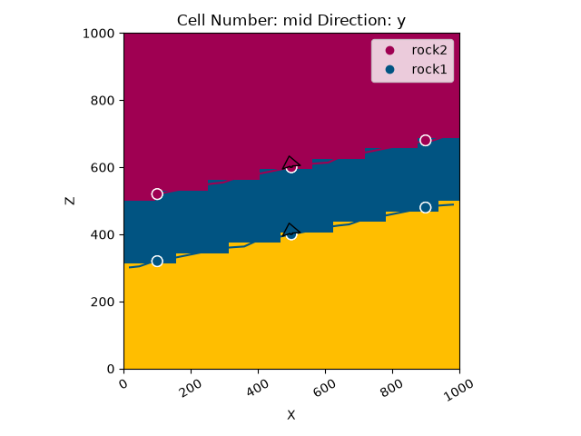
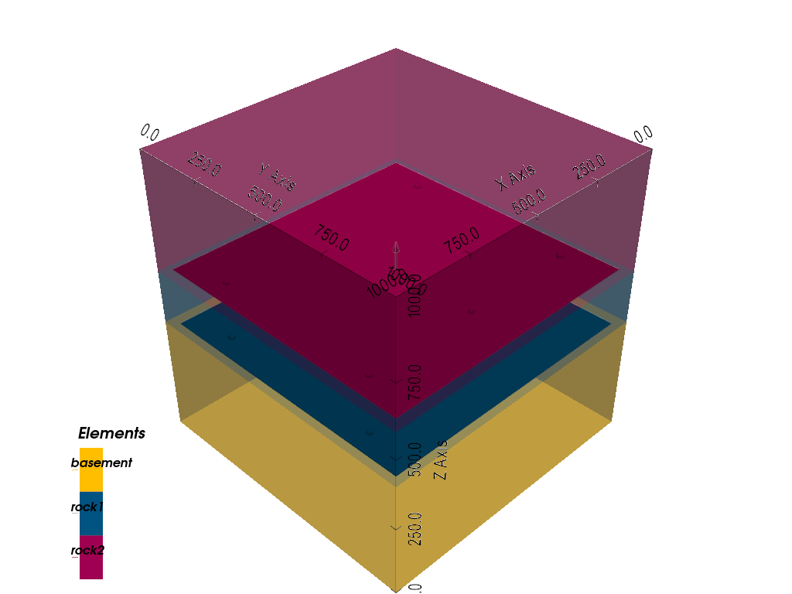
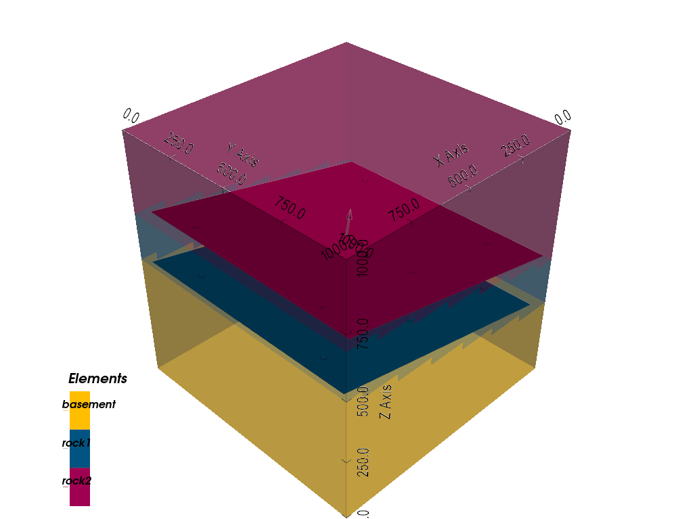

Note
Go to the end to download the full example code.
Saving and Loading gempy Models¶
Serializing a configured model to disk, and loading it back in a later session
gempy models can be saved to a .gempy file and loaded again in a later
Python session. This is useful when you want to preserve a configured model
without repeating the complete setup from the input data and modeling code, or
when you want to keep track of different model versions and geological
hypotheses.
This tutorial starts from Model 1 - Horizontal Stratigraphy in the gempy Examples section, saves it, modifies the input data, saves the modified version, and then reloads both model iterations for comparison.
Note
Saving a model only preserves its definition, not its computed
solution – a loaded model has to be recomputed before its results are
available again (see Model definition vs. computed solution further
below). This matters most for models that are expensive to compute. gempy
does not natively support saving computed solutions, but they can be saved
with Python’s built-in pickle module instead; an example is shown at
the end of this tutorial.
from pathlib import Path
import numpy as np
import gempy as gp
import gempy_viewer as gpv
Setting up the initial model¶
We start by recreating the simple horizontal stratigraphy model from the example gallery (see Model 1).
data_path = 'https://raw.githubusercontent.com/cgre-aachen/gempy_data/master/'
path_to_data = data_path + "/data/input_data/jan_models/"
geo_model = gp.create_geomodel(
project_name='horizontal',
extent=[0, 1000, 0, 1000, 0, 1000],
refinement=5,
importer_helper=gp.data.ImporterHelper(
path_to_orientations=path_to_data + "model1_orientations.csv",
path_to_surface_points=path_to_data + "model1_surface_points.csv",
)
);
gp.map_stack_to_surfaces(
gempy_model=geo_model,
mapping_object={"Strat_Series": ('rock2', 'rock1')}
);
Surface points hash: 6f1a39ed77e87a4057f03629c946b1876b87e24409cadfe0e1cf7ab1488f69e4
Orientations hash: 04c307ae23f70252fe54144a2fb95ca7d96584a2d497ea539ed32dfd23e7cd5d
We can now compute and plot the initial model. The layers are fully horizontal, which gives us a clear reference before editing the input data.
Setting Backend To: AvailableBackends.PYTORCH
GPU requested but unavailable; falling back to CPU (GEMPY_GPU_FALLBACK=True)
Setting Backend To: AvailableBackends.PYTORCH
gpv.plot_2d(geo_model, direction='y', show_data=True)

<gempy_viewer.modules.plot_2d.visualization_2d.Plot2D object at 0x7f9a07427cd0>
Saving the initial model¶
save_model serializes the model to gempy’s .gempy file format.
If the supplied path has no file extension, .gempy is added
automatically. Here we save the horizontal model before making any changes,
so we can compare this iteration with a modified one later.
initial_model_path = gp.save_model(
geo_model,
path="horizontal_initial_model",
)
initial_model_path
/opt/buildAgent/work/3a8738c25f60c3c9/examples/tutorials/b_fundamentals/f06_save_load.py:82: UserWarning: GemPy model serialization is still in development, and compatibility across GemPy versions is not guaranteed. .gempy files include version metadata to help identify the GemPy version used to save the model.
initial_model_path = gp.save_model(
'horizontal_initial_model.gempy'
save_model returns the actual path that was written. In this case, the
resulting file is horizontal_initial_model.gempy.
If no path is supplied at all, gempy uses the model name instead:
By default, gempy validates the serialization by reconstructing the model in
memory before writing it to disk. This check can be disabled with
validate_serialization=False if needed.
Note
Model serialization is still in development, and compatibility across gempy
versions is not guaranteed. Internally, a .gempy file is a compressed
archive containing model metadata, serialization metadata, and binary
structural-input and grid data – this internal structure, and gempy’s
compatibility guarantees, may change in future versions.
Saved files include version metadata to help identify the gempy version used to save the model. The current gempy version can also be checked directly:
gp.__version__
'2024.2.0.3.dev0+gf344a731.d20240626'
Modifying the input data¶
Now we make the model less horizontal by raising the surface points on the right side of the model and lowering them on the left side. This changes the model definition itself, not just the computed result.
surface_points = geo_model.surface_points_copy
slope = 0.20
tilted_z = surface_points.data['Z'] + slope * (surface_points.data['X'] - 500)
gp.modify_surface_points(
geo_model,
Z=tilted_z,
);
geo_model.surface_points_copy
The initial orientations were horizontal. Because the edited contacts now dip along the x direction, we also update the orientation vectors before recomputing.
orientations = geo_model.orientations_copy
gp.modify_orientations(
geo_model,
G_x=np.full(len(orientations.data), -slope),
G_y=np.zeros(len(orientations.data)),
G_z=np.ones(len(orientations.data)),
);
geo_model.orientations_copy
Recomputing and visualizing the modified model¶
The model now contains a tilted version of the initial stratigraphy.
Setting Backend To: AvailableBackends.PYTORCH
GPU requested but unavailable; falling back to CPU (GEMPY_GPU_FALLBACK=True)
Setting Backend To: AvailableBackends.PYTORCH
gpv.plot_2d(geo_model, direction='y', show_data=True)

<gempy_viewer.modules.plot_2d.visualization_2d.Plot2D object at 0x7f9a0734c950>
Saving the modified model¶
Saving again gives us a second model file that represents a later iteration of the same modeling workflow.
tilted_model_path = gp.save_model(
geo_model,
path="horizontal_tilted_model",
)
tilted_model_path
/opt/buildAgent/work/3a8738c25f60c3c9/examples/tutorials/b_fundamentals/f06_save_load.py:172: UserWarning: GemPy model serialization is still in development, and compatibility across GemPy versions is not guaranteed. .gempy files include version metadata to help identify the GemPy version used to save the model.
tilted_model_path = gp.save_model(
'horizontal_tilted_model.gempy'
Loading both model iterations¶
A saved model can be reconstructed with load_model. When loading, the
.gempy extension must be included explicitly.
loaded_initial_model = gp.load_model(initial_model_path)
loaded_tilted_model = gp.load_model(tilted_model_path)
/opt/buildAgent/work/3a8738c25f60c3c9/examples/tutorials/b_fundamentals/f06_save_load.py:186: UserWarning: GemPy model serialization is still in development, and compatibility across GemPy versions is not guaranteed. .gempy files include version metadata to help identify the GemPy version used to save the model.
loaded_initial_model = gp.load_model(initial_model_path)
/opt/buildAgent/work/3a8738c25f60c3c9/examples/tutorials/b_fundamentals/f06_save_load.py:187: UserWarning: GemPy model serialization is still in development, and compatibility across GemPy versions is not guaranteed. .gempy files include version metadata to help identify the GemPy version used to save the model.
loaded_tilted_model = gp.load_model(tilted_model_path)
Model definition vs. computed solution¶
As mentioned in the note at the top of this tutorial, a .gempy file
preserves the model definition and the data required to reconstruct it, but
not the computed Solutions object – loaded models need to be computed
again before their results are used.
Setting Backend To: AvailableBackends.PYTORCH
GPU requested but unavailable; falling back to CPU (GEMPY_GPU_FALLBACK=True)
Setting Backend To: AvailableBackends.PYTORCH
Setting Backend To: AvailableBackends.PYTORCH
GPU requested but unavailable; falling back to CPU (GEMPY_GPU_FALLBACK=True)
Setting Backend To: AvailableBackends.PYTORCH
Comparing the loaded models¶
After recomputing, both loaded models can be visualized and used like any
other gempy model. The initial saved model (loaded_initial_model) is still
horizontal, while the second saved model (loaded_tilted_model) contains
the tilted input data:
gpv.plot_2d(loaded_initial_model, direction='y', show_data=True)
gpv.plot_2d(loaded_tilted_model, direction='y', show_data=True)


<gempy_viewer.modules.plot_2d.visualization_2d.Plot2D object at 0x7f9a29ec5150>
We can also inspect both loaded iterations in 3D:
gpv.plot_3d(loaded_initial_model, show_lith=True, show_boundaries=True, ve=None)
gpv.plot_3d(loaded_tilted_model, show_lith=True, show_boundaries=True, ve=None)


<gempy_viewer.modules.plot_3d.vista.GemPyToVista object at 0x7f9a29eef770>
Saving computed results instead¶
As noted at the top of this tutorial, save_model does not preserve a
model’s computed Solutions – only its definition. If recomputing a model
is expensive, the in-memory model can instead be pickled directly with
Python’s built-in pickle module, computed solutions included.
Note
This is not gempy-specific functionality. pickle is a general-purpose
Python serialization tool, and pickled files are highly sensitive to the
exact Python, gempy, and dependency versions (and even the operating
system) used to create them. A file pickled here may fail to unpickle in a
different environment, so treat this as a short-term convenience rather
than a durable storage format.
import pickle
pickled_model_path = "horizontal_tilted_model_solution.p"
with open(pickled_model_path, "wb") as f:
pickle.dump(geo_model, f)
Loading the pickle file back restores the model exactly as it was, including
its computed solutions – no compute_model call needed:
with open(pickled_model_path, "rb") as f:
unpickled_model = pickle.load(f)
unpickled_model.solutions
Remove the example files created by this tutorial:
Path(initial_model_path).unlink(missing_ok=True)
Path(tilted_model_path).unlink(missing_ok=True)
Path(pickled_model_path).unlink(missing_ok=True)
# sphinx_gallery_thumbnail_number = -1
Total running time of the script: (0 minutes 5.378 seconds)